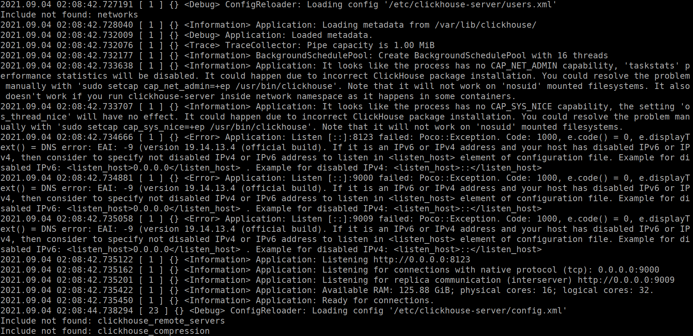
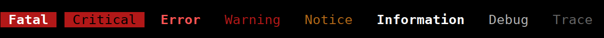

How to Colorize Logs?
Use terminal control sequences.

ANSI escape sequences:
ESC — \x1b (hex), \033 (octal).
Example: \x1b[31m — red color.
Alexey, ClickHouse developer.
— not about ClickHouse?
— not about databases??
— not about backend???
— not about development????
— not about technology?????
— about one small task...
It outputs logs:
— logging level;
— logger name;
— query identifier;
— thread number;
Use terminal control sequences.
ANSI escape sequences:
ESC — \x1b (hex), \033 (octal).
Example: \x1b[31m — red color.
echo -e "\033[1;41m Fatal \033[0m" \
"\033[7;31m Critical \033[0m" \
"\033[1;31m Error \033[0m" \
"\033[0;31m Warning \033[0m" \
"\033[0;33m Notice \033[0m" \
"\033[1m Information \033[0m" \
" Debug " \
"\033[2m Trace \033[0m"

for i in {0..1};
do
for j in {0..7};
do
echo -e "\033[${i};3${j}m ☻☺☻☺☻☺☻☺☻☺☻☺☻☺☻☺☻☺☻☺ \033[0m";
done;
echo;
done
— depend on terminal emulator;
— depend on display settings.
— pseudo-randomly: each query gets its own color;
— calculate hash function, map it to color.
COLORS=("\033[0;31m" "\033[0;32m" "\033[0;33m" "\033[0;34m"
"\033[0;35m" "\033[0;36m" "\033[0;37m" "\033[1;30m"
"\033[1;31m" "\033[1;32m" "\033[1;34m" "\033[1;35m"
"\033[1;36m");
NOCOLOR="\033[0m";
for i in {0..1000};
do
COLOR=${COLORS[$(($RANDOM % ${#COLORS[*]}))]};
echo -n -e $COLOR test $NOCOLOR;
done
ESC[ 38;2;⟨r⟩;⟨g⟩;⟨b⟩ m
— not supported by all terminals;
— for example, not supported by screen.

Source: https://commons.wikimedia.org/wiki/File:RGB_color_cube.svg
Option 1:
— generate each R, G, B component
uniformly randomly in range 0..255.
for i in {0..1000}; do echo -e -n
"\033[38;2;$((RANDOM % 256));$((RANDOM % 256));$((RANDOM % 256))m" \
"test" \
"\033[0m";
done
Option 1:
— generate each R, G, B component
uniformly randomly in range 0..255.
Disadvantage:
— colors often blend with background.
Random color hue, but approximately
same brightness and saturation.
Obvious solution: switch to HSV color space?
PS. HSV? HSL? HSB? HSI?
Source: https://commons.wikimedia.org/wiki/File:HSL-HSV_hue_and_chroma.svg
Source: https://commons.wikimedia.org/wiki/File:HSV-RGB-comparison.svg
for (let i = 0; i < 200; ++i) {
document.write('<span style="color: hsl('
+ Math.random() * 360
+ ', 100%, 50%)">test<\/span> ');
}
Disadvantages:
— for some reason, few colors;
— for some reason, colors still have different brightness.
Can we do better?
How do people perceive colors?
How to describe the set of all possible colors?
What does color space look like?
How to numerically describe this space?
Which colors can be reproduced?

How do people perceive colors?
— under what lighting to view?
— at what angle to view?
— who exactly is viewing?
— how does observer understand colors?
How to calculate brightness of color specified in RGB*?
1. Brightness = max(r, g, b)
2. Brightness = (r + g + b) / 3
3. Brightness = 0.299 * r + 0.587 * g + 0.114 * b
4. Brightness = 0.2126 * r + 0.7152 * g + 0.0722 * b
In fact, all methods above are incorrect without context.
Which RGB space is meant? Gamma?
Brightness of each component may depend on monitor (however, monitors are calibrated) and observer (but they are not calibrated).
Random color hue, but approximately
same brightness and saturation.
Obvious solution: switch to HSV color space?
Doesn't work, because in HSV, V (value) is not brightness, but something else.
And we also didn't use S (saturation).
Let's switch to YCbCr color space!
for (let i = 0; i < 200; ++i) {
let y = 128;
let cb = Math.random() * 256;
let cr = Math.random() * 256;
let r = Math.max(0.0, Math.min(255.0,
y + 1.402 * (cr - 128)));
let g = Math.max(0.0, Math.min(255.0,
y - 0.344136 * (cb - 128) - 0.714136 * (cr - 128)));
let b = Math.max(0.0, Math.min(255.0,
y + 1.772 * (cb - 128)));
document.write('<span style="color: rgb('
+ r + ',' + g + ',' + b + ')">test<\/span> ');
}
Switch to YCbCr color space
fix Y and generate Cb, Cr.
Perfect? But there's a nuance...
In YCbCr, YPbPr, YUV, component Y is also not quite brightness!
In YCbCr, YPbPr, YUV, component Y is «Luma»
— non-linearly encoded brightness using gamma-compression.
sRGB #888888 on typical monitor - 20% of brightness, not 50%.
Bug: images become darker when reduced: http://www.ericbrasseur.org/gamma.html
How to do even better?
L*a*b*, XYZ?
But I got tired.
Want to make something really good?
— you'll have to learn tons of details.
Attention to detail is an important quality of developer.
Note: this talk is very superficial!
Literature: https://www.handprint.com/HP/WCL/color1.html